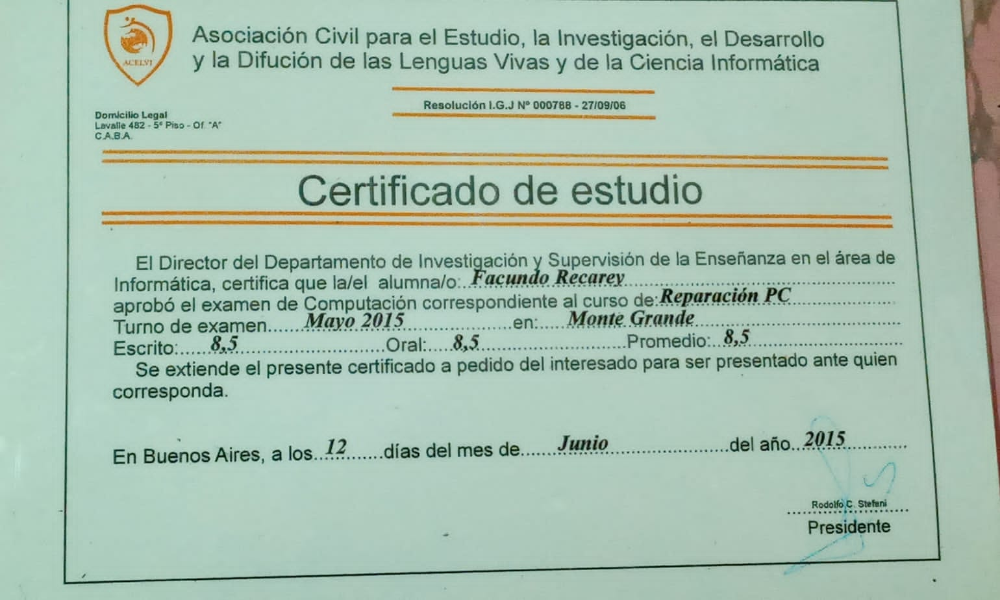

Currículum Vitae
Facundo Recarey
27 años
Salta 350, Monte Grande
Soltero (sin hijos)
15-2645-0011
facundorecarey@gmail.com
Mirá mi perfil en Linkedin
Descargá mis proyectos en Github y mirálos a través de los links:
Perfil
Me considero una persona autodidácta que está en constante aprendizaje a través de libros y videotutoriales. Si bien soy estudiantes de sistemas de primer año en la Universidad Nacional de Lanús, me parece fundamental aprender todo el tiempo por uno mismo, debido a la evolución del mundo tecnológico. Poseo conocimientos de programación general tales como tipos de datos, uso de variables, estructuras de control (bucles y condicionales), matrices, funciones y conceptos en programación orientada a objetos como propiedades, atributos, abstracción, encapsulamiento, modularidad, etc.
Objetivos
Me interesa todo lo relacionado a la informática. En estos momentos me encuentro aprendiendo desarrollo web del lado del front-end y backend por mi cuenta pero estoy abierto a propuestas en otras tecnologías. En la universidad me encuentro estudiando todo lo relacionado a organización de computadoras, algoritmia y aprendizaje del lenguaje C.
Uso de etiquetas fundamentales para la elaboración de estructuras de un sitio web.
Manejo de propiedades principales para dar estilos de distina índole a sitios web, concepto mobile-first y diseño responsivo. Conocimiento en modelos de diseño más usados en el mercado como Flexbox y CSS-Grid.
Experiencia básica en este lenguaje para brindar interactividad al sitio y desarrollo de aplicaciones. Nociones básicas de APIs y formato JSON.
Empleo básico del lenguaje para desarrollar webs dinámicas y complementar con lenguaje SQL. Concepto de envío de datos a través de GET y POST, validaciones de formulario, cookies y sesiones. Poseo nociones del funcionamiento del patrón modelo-vista-controlador y desarrollo de aplicaciones CRUD.
Conocimiento standard del lénguaje para dar forma a bases de datos y de entornos como XAMPP y Workbench.
Uso del lenguaje en constante aprendizaje en la universidad y de manera autodidácta.
Desarrollo básico de UI para lograr una buena UX
Práctica en control de versiones para realizar operaciones fundamentales a la hora de desarrollar y actualizar sitios web.
Utilización de libreria para acelerar diseños de sitios web.
Experiencias laborales
Sudasist
sept. 2020 - ago. 2021, Capital Federal
Puesto de telemarketer en empresa de capital federal, cuya función era ofrecer a clientes servicios de protección legal, terapia en línea y cartera de profesionales especializados en problemas domésticos de agua, luz, gas, etc.
Sitio WebKiosko Full 24x7
sept. 2018 - jun. 2020, Lanús
Encargado de reposición de productos, manejo de posnet, cargas de tarjeta sube y de celulares, actualización de inventario y manejo de software de venta.
Red SocialFM Canning 96.5
dic. 2012 - jul. 2017, Canning
Comienzo como editor junior de programas radiales a través de softwares de distinta índole, para luego progresar como operador técnico de consola de radio y por último, realizar armado de planes publicitarios para la empresa.
Sitio WebEstudios
Estudiante de sistemas en la Universidad Nacional De Lanús
Me encuentro cursando primer año, dando mayor prioridad a materias como Programación y Base de Datos para lograr una rápida inserción laboral.
Sitio WebCurso de reparación de PC
jun. 2015 - sept. 2016, Monte Grande
Curso donde aprendí las bases de software y hardware para poder realizar armados y reparación de computadoras de escritorio: diagnóstico, cambio de partes, formateos e instalación de software fundamental para el uso cotidiano.
Sitio Web Instituto Educacional Inti Huasi
jun. 2005 - dic. 2012, Monte Grande
Poseo título bachiller en orientación contable.
Sitio WebIdioma Inglés
Nivel básico de idioma inglés. Capacidad básica de lectura habla y entendimiento.